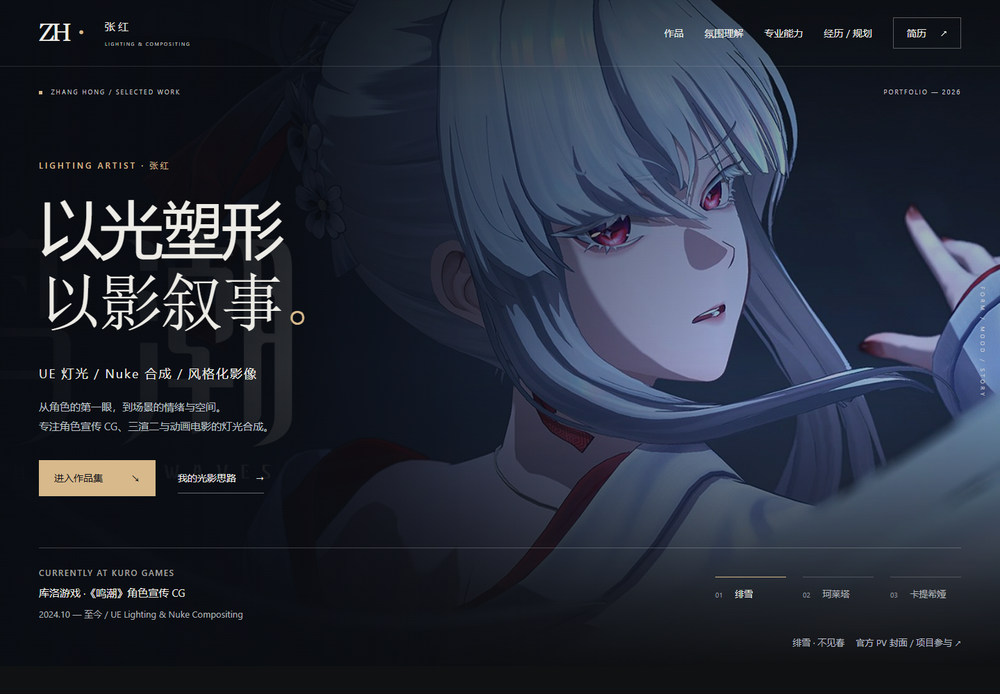
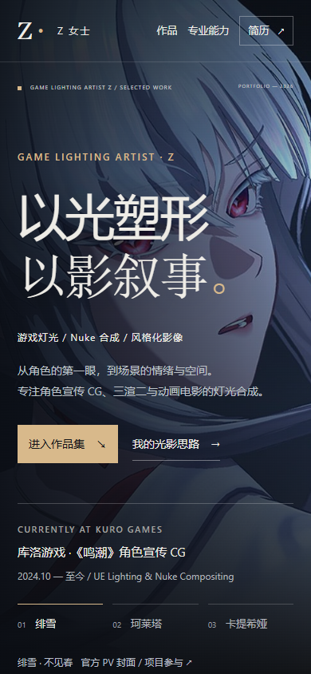

简历空间有限
作品只能压成小图，画面细节很难被看清。
图片、视频和项目经历，终于能在一个页面里按重点展开。


资料都在，但招聘方需要来回翻找，真正重要的作品反而容易被忽略。
作品只能压成小图，画面细节很难被看清。
项目顺序不统一，个人职责也不容易对应。
网盘、平台链接和项目说明不在同一个观看路径里。
代表作先出现，再交代岗位方向和项目入口，让观看顺序更清楚。
不是把电脑页面缩小，而是重新安排窄屏上的阅读顺序。

让作品画面、个人职责和观看入口出现在同一个项目里。
项目影像为团队制作成果，个人职责以作品集页面说明为准。
不是简单搬运简历，而是把内容、视觉和使用体验一起整理好。
确认目标岗位、代表项目、个人职责和能够公开的素材范围。
确定首屏气质、项目层级，并分别设计电脑和手机上的阅读方式。
检查链接、响应式布局和隐私信息，最后交付可分享的网页入口。